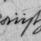

 As this section and the next use a variety of linguistic terms, here are some definitions. “Flexion” is the changing of a word according to its situation, and there are several kinds:
inflection: a variable ending for a word, such as “a” becoming “an”.
agreement: when the inflection of one word is changed to match another word which it goes with. Thus “grand maison” but “grande dame” (French), where the inflection on “grand” agrees with the gender of the noun it is being applied to.
affix: part of a word which is attached either at the beginning (prefix), the end (suffix) or somewhere in the middle (infix) of the ordinary word (the stem) to indicate, for instance, person or gender of the objects attached to a verb. The affix often plays a part that an entirely separate word would play in English. For instance, “donnez-lui” (French: “give to him”), where the suffix is “-lui”, or “cogela” (Spanish: “take it”), where the suffix is “la”.
enclitic: an affix, usually a suffix, meaning “too” or “and” in English. For instance, “que” (Latin).
agglutinization: the practice of composing many affixes to a single word, so that it may even become an entire phrase. For instance:
kirjoitettuasi after you had written (Finnish)
· · · · ·
In most languages, noun phrases have different cases according to their situation in a sentence. In the English sentence “Emily ate one bath bun and gave Beatrice the other”, the noun phrase “Emily” is nominative, “one bath bun” and “the other” are accusative and “Beatrice” is dative. These last two are the cases most often occurring in Inform commands, as in the example
leg den frosch auf ihn put the frog
on him (German)
nimm den frosch von ihm take the frog from him
where the noun phrase “den frosch” is accusative both times, but “ihn” and “ihm” are the same word (“him”) in its accusative and dative forms. In some languages a vocative case would also be needed for the name of someone being addressed:
domine, fiat lux Lord, let there be light (Latin)
since “domine” is the vocative form of “dominus”. Latin also has genitive and ablative cases, making six in all, but this pales by comparison with Finnish, which has about thirty. In effect, a wide range of English prepositional phrases like “into the water” are written as just the noun phrase “water” with a suffix meaning “into”.
· · · · ·
To parse any of these languages, and even in some circumstances to parse special effects in English-language games, it's useful to have further control over the way that the parser recognises noun phrases.
The words entered into an object's name property
normally take the accusative case, the one most often needed in commands,
as for example in the grammar line:
Verb 'take' * noun -> Take;
On the other hand, the nouns in the following grammar lines aren't all accusative:
Verb 'give'
* noun 'to' noun -> Give
* noun noun -> Give reverse;
This matches “give biscuit to jemima” and “give jemima biscuit”, “biscuit” being accusative in both cases and “to jemima” and “jemima” both dative. In a language where the spelling of a word can tell a dative from an accusative, such as German, we could instead use grammar like this:
Verb 'give'
* noun dativenoun -> Give
* dativenoun noun -> Give reverse;
where dativenoun
is some token meaning “like noun,
but in the dative case instead of the accusative”. This could
be used as the definition of a German verb “gib”, in which
case both of the following would be parsed correctly:
gib die blumen dem maedchen give
the flowers to the girl
gib dem maedchen die blumen give the girl the flowers
Unfortunately Inform doesn't come with a token called
dativenoun built in,
so you have to write one, using a general parsing routine (see
§31). For the sake
of an example closer
to English, suppose a puzzle in which the Anglo-Saxon hero Beowulf will
do as he is asked to, but only if addressed in Old English:
beowulf, gief gold to cyning beowulf, give gold to king (Old English)
The grammar would be much like that for German, and indeed English:
Verb 'gief' * noun dativenoun -> OEGive;
and here is a simple version of
dativenoun:
[ dativenoun;
if (NextWord() == 'to')
return ParseToken(ELEMENTARY_TT, NOUN_TOKEN);
return GPR_FAIL;
];
Read this as: “if the next word is “to”, try and match a noun following it; otherwise it isn't a dative”. A more likely form of the command is however
beowulf, gief gold cyninge beowulf, give gold to king (Old English)
where “cyninge” is the dative form of “cyning”. The ending “-e” often indicates a dative in Old English, but there are irregularities, such as “searo” (device), whose dative is “searwe”, not “searoe”. In the unlikely event of Beowulf confronting a vending machine:
beowulf, gief gold to searo
beowulf, give gold to device (Old English)
beowulf, gief gold searwe beowulf, give gold to device
How to manage all this? Here is a laborious way:
Object -> "searo"
with name 'searo', dativename 'searwe';
Object -> "Cyning"
with name 'cyning', dativename 'cyninge';
[ dativenoun;
if (NextWord() ~= 'to') {
wn--; parser_inflection = dativename;
}
return ParseToken(ELEMENTARY_TT, NOUN_TOKEN);
];
The variable parser_inflection tells
the parser where to find the name(s) of an object. It must always be
equal to either a property or a routine. Most of the
time it's equal to the property name, the accusative case
as normal. If it equals another property, such as dativename,
then the parser looks in that property for name-words instead of in
name.
The above solution is laborious because it makes
the game designer write out dative forms of every name, even though they
are very often the same but with “-e” suffixed. It's for
this kind of contingency that parser_inflection can be
set to a routine name. Such an “inflection routine” is
called with two arguments: an object and a dictionary word. It returns
true if the dictionary word can mean the object and
false if not. The word number wn is always
set to the number of the next word along, and it should not be moved.
Two library routines may be particularly helpful:
DictionaryLookup(text, length)
returns 0 if the word held as a ->
array of characters
text->0, text->1, ..., text->(length-1)
is not in the game's dictionary, or its dictionary entry if it is.
WordInProperty(word, object, property)
to see if this is one of the words listed in
object.property. It may also be useful to know that the
variable indef_mode is always set to true when
parsing something known to be indefinite (e.g., because an indefinite
article or a word like “all” has just been typed), and
false otherwise.
•▲
EXERCISE 107
Rewrite the dativenoun token so that “-e”
is recognised as a regular suffix indicating the dative, while still
making provision for some nouns to have irregular dative forms.
•▲
EXERCISE 108
Now add an (imaginary, not Old English) dative pronominal adverb
“toit”, which is to be understood as “to it”.
•▲▲
EXERCISE 109
Define a token swedishnoun
to make nouns and adjectives agree with the article (definite or
indefinite) applied to them, so for instance:
en brun hund a brown dog (Swedish)
den bruna hunden the brown dog
ett brunt hus a brown house
det bruna huset the brown house
▲▲ The use of grammar tokens is only one way of dealing with flexion and pronominal adverbs. The alternative is to alter the text typed until it resembles normal Informese:
gief gold cyninge → gief gold to cyning
gief gold toit → gief gold to it
den bruna hunden → den brun hund
det bruna huset → det brun hus
See §36 below. In a heavily inflected language with many irregularities, a combination of the two techniques may be needed.